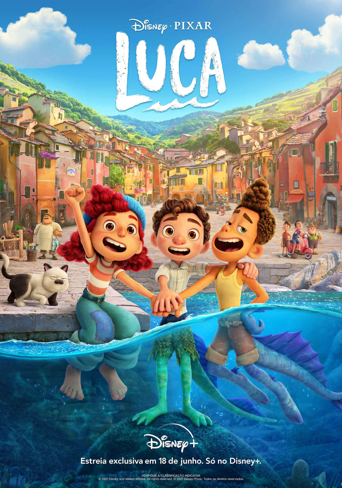
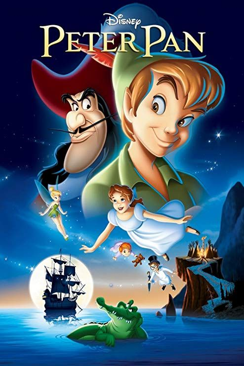

Guardianes de la galaxia
Un aventurero espacial se convierte en la presa de unos cazadores de tesoros después de robar el orbe de un villano traicionero. Cuando descubre su poder, debe hallar la forma de unir a unos rivales para salvar al universo.

Luca
Luca es un monstruo marino que vive debajo de un pueblo de la costa italiana. Cuando sale a la superficie, adquiere una apariencia humana, y conoce a un nuevo amigo, igual que él. Juntos emprenden una aventura entre humanos que odian a los monstruos.

Peter Pan
La joven Wendy Darling, que quiere evitar el internado, conoce a Peter Pan, un niño que se niega a crecer. Wendy, sus hermanos y Campanilla viajan con Peter al mundo mágico de Nunca Jamás, donde se encuentra con un malvado capitán pirata.